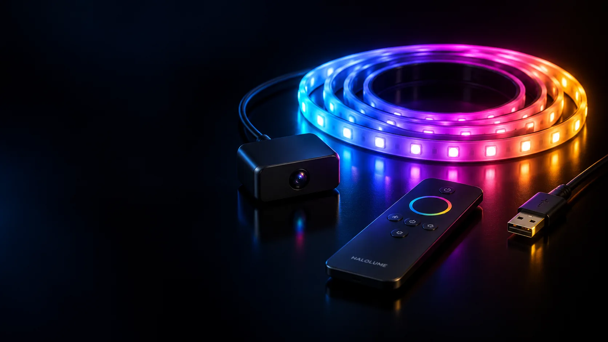
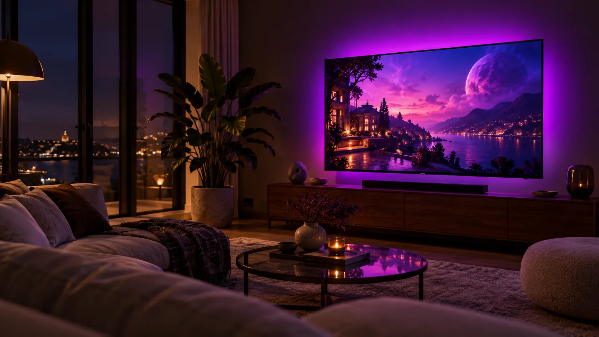
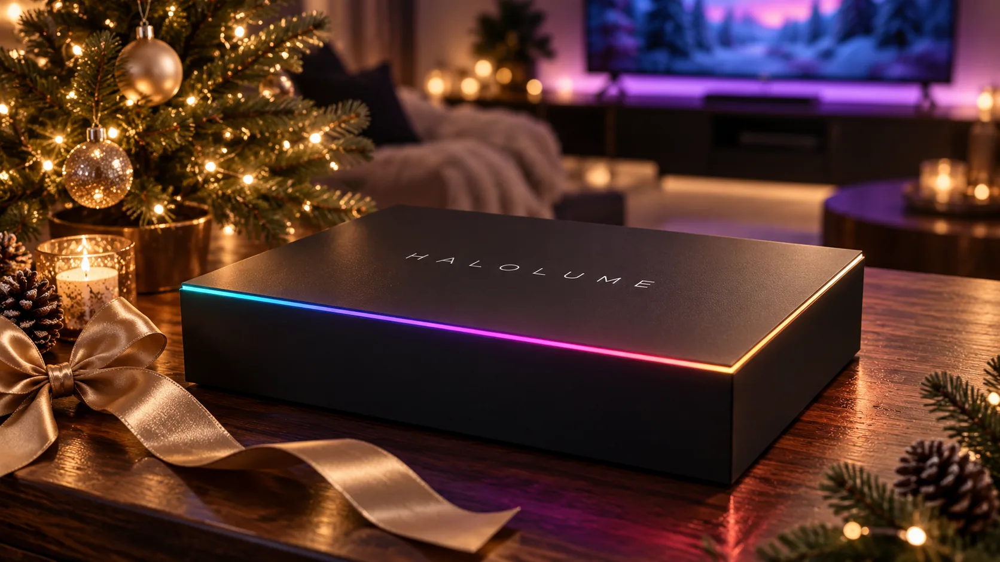

Halolume 4 meter
Voor tv's van 55 tot 65 inch
€29,99
- 1 ledstrip met zone-sensor
- Afstandsbediening
- Gratis verzending
Maatgids
Kort antwoord: voor een tv van 55 tot 65 inch is 4 meter genoeg, voor 65 tot 75 inch kies je 5 meter. Hieronder zie je waarom, met de omtrek per schermmaat en hoe je het bij je eigen tv nameet. Verderop lees je ook wat ambilight is en hoe Halolume zich daartoe verhoudt.

De inchmaat van een tv is de diagonaal van het scherm. Bij een gewone 16:9-tv kun je daaruit de breedte, hoogte en omtrek berekenen. De strip plak je op de achterkant, een paar centimeter binnen de rand. Daardoor heb je minder nodig dan de omtrek van het scherm.
| Tv | Breedte × hoogte scherm | Omtrek scherm | Advies |
|---|---|---|---|
| 55 inch | 122 × 68 cm | ca. 3,8 m | 4 meter |
| 58 inch | 128 × 72 cm | ca. 4,0 m | 4 meter |
| 65 inch | 144 × 81 cm | ca. 4,5 m | 4 meter (binnen de rand) of 5 meter (dicht langs de rand) |
| 70 inch | 155 × 87 cm | ca. 4,8 m | 5 meter |
| 75 inch | 166 × 93 cm | ca. 5,2 m | 5 meter |
Maten afgerond, berekend voor een 16:9-scherm. De behuizing van de tv is iets groter dan het scherm zelf.
Heeft je tv een andere maat dan 55 tot 75 inch? Halolume is gemaakt voor dat bereik. Twijfel je, stuur ons even een bericht met het type tv, dan kijken we mee.
Begin bij de kant waar de USB-poort van je tv zit, zodat de kabel kort blijft. Maak de achterkant eerst stofvrij en droog, plak de strip in één keer rond en knip pas aan het eind af bij de markering. Zet daarna de kleine zone-sensor midden bovenop het scherm, gericht op het beeld. De strip krijgt stroom via USB en gaat zo aan en uit met de tv. Alles bij elkaar ben je ongeveer 5 minuten bezig.
Kort antwoord: Ambilight is een merknaam van Philips voor de verlichting die in Philips-tv's is ingebouwd. Leds op de achterkant van de tv laten de muur meekleuren met het beeld. Je krijgt het alleen bij een Philips-tv die het heeft. Wil je hetzelfde effect bij een andere tv, dan heb je een losse ledstrip nodig die het beeld volgt.
Philips bracht Ambilight in 2004 op de markt. De tv leest het beeldsignaal zelf uit en stuurt de leds direct aan, zonder camera of sensor. Afhankelijk van het model zit het licht aan twee, drie of vier kanten van de tv. In het dagelijks taalgebruik noemen veel mensen inmiddels elk meekleurend licht achter de tv ambilight, ook als het geen Philips is.
| Manier | Hoe het beeld gelezen wordt | Werkt met | Goed om te weten |
|---|---|---|---|
| Ingebouwd (Philips Ambilight) | De tv leest het beeldsignaal direct | Alleen Philips-tv's met Ambilight | Geen losse onderdelen, maar vast aan de tv die je koopt |
| HDMI-syncbox | Een kastje tussen bron en tv leest het HDMI-signaal | Alles wat via de HDMI-ingangen van het kastje loopt | Apps die op de smart-tv zelf draaien ziet het kastje niet |
| Camera-set | Een kleine camera op de rand van de tv filmt het scherm | Elke tv en elke bron | Ziet meer detail dan een sensor; de camera moet goed gericht staan |
| Kleursensor (Halolume) | Een kleine sensor bovenop het scherm leest de kleuren in zones | Elke tv en elke bron, ook apps | Stroom via de USB-poort van de tv; voor tv's van 55 tot 75 inch |
Een gewone ledstrip met afstandsbediening leest het beeld niet. Die geeft een vaste kleur of lichtscène en kleurt dus niet mee met wat je kijkt.
Halolume geeft hetzelfde soort effect, maar voor elke tv. Je plakt de strip op de achterkant en zet de kleine zone-sensor midden bovenop het scherm, gericht op het beeld. De sensor leest het beeld in meerdere zones: staat er links iets geels en rechts iets paars, dan kleurt de strip links geel en rechts paars. Omdat de sensor naar het scherm zelf kijkt, maakt de bron niet uit. Netflix, decoder, console of laptop: het werkt allemaal.
Eerlijk is eerlijk: Halolume is geen Philips-product en geen echte Ambilight. Ingebouwde Ambilight leest het signaal direct uit de tv en volgt het beeld daardoor nauwkeuriger dan een sensor die naar het scherm kijkt. Heb je al een Philips-tv met Ambilight, dan heb je Halolume niet nodig.
Echte Ambilight niet: die zit alleen in Philips-tv's die het hebben. Op een tv van een ander merk krijg je een vergelijkbaar effect met een losse ledstrip die het beeld volgt via een sensor, camera of HDMI-syncbox.
Nee. Ambilight is ingebouwd in Philips-tv's en leest het beeldsignaal direct. Halolume is een losse ledstrip met een kleursensor bovenop het scherm, zodat het effect ook werkt op tv's van andere merken.
Met een sensor of camera wel, want die kijken naar het scherm zelf. Een HDMI-syncbox ziet alleen wat via zijn eigen HDMI-ingang binnenkomt, dus niet de apps die op de smart-tv zelf draaien.
Halolume is op dit moment uitverkocht. Bestellen kan nu niet. De prijs is voor beide maten gelijk.

Voor tv's van 55 tot 65 inch
€29,99

Voor tv's van 65 tot 75 inch
€29,99
Prijzen inclusief btw.
Knip hem af bij de markering op de strip. Begin met plakken bij de aansluiting en knip pas aan het eind, als je ziet hoeveel er over is. Een al geknipte strip kun je nog terugsturen, maar dan kan er een waardevermindering worden ingehouden (zie retourneren).
Rondom geeft het mooiste effect, omdat elke kant dan meekleurt met dat deel van het beeld. Staat de tv op een meubel, dan kun je de onderkant ook overslaan.
De sensor kijkt naar het scherm zelf, dus het maakt niet uit waar het beeld vandaan komt: apps, decoder, console of laptop. Je hebt alleen een vrije USB-poort op de tv nodig voor de stroom.
Kies dan 5 meter, die is voor elke tv in het bereik op maat te knippen. Meer tips op de cadeaupagina.
Op onze vergelijkingssite watkoopik.nl staan per schermmaat de beste tv's van dit moment, met prijzen die we elke dag bij bol meten: beste tv 55 inch, beste tv 65 inch en beste tv 75 inch. Twijfel je nog over het type, lees dan eerst welke tv moet ik kopen.